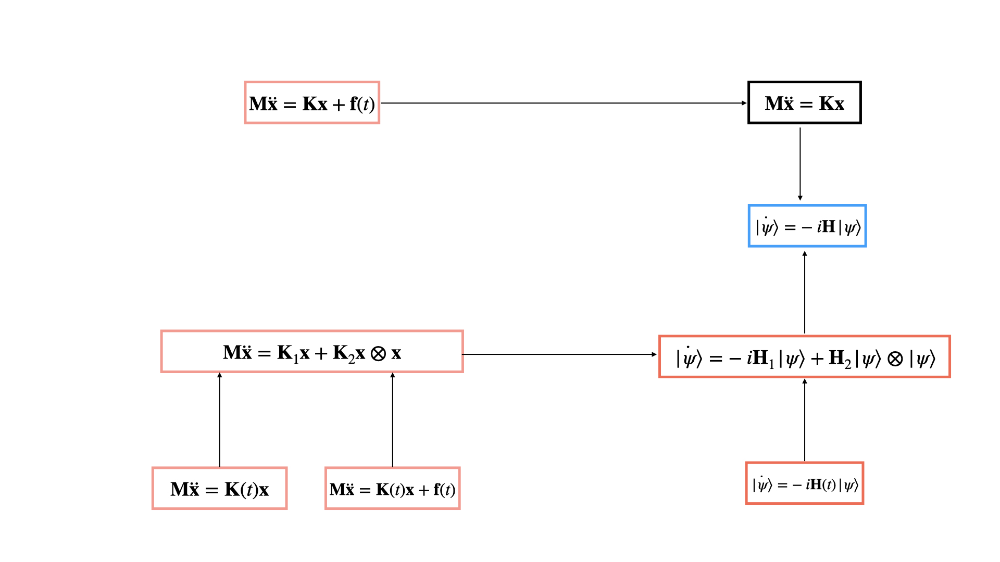

Simulating Time-Dependent and Nonlinear Classical Oscillators through Nonlinear Schrödingerization
Quantum computers can simulate the dynamics of 2n coupled harmonic oscillators in time polynomial in n, an exponential speedup over classical methods. Real physical systems, however, are rarely that clean: they are driven by time-dependent forces, have stiffness that changes over time, and include nonlinear interactions. Existing quantum algorithms do not cover these cases, which limits where the speedup can actually be used.
In this work we introduce nonlinear Schrödingerization. We rewrite the classical dynamics as a nonlinear Schrödinger equation, reduce it to a time-independent one using perturbative techniques, and handle weak nonlinearities by embedding them in a linear Schrödinger equation on a higher-dimensional space. Standard Hamiltonian simulation algorithms then apply. When the system can be queried and the initial state prepared efficiently, the cost is polynomial in n and nearly linear in evolution time for most systems. This extends quantum simulation to non-conservative and nonlinear classical systems.